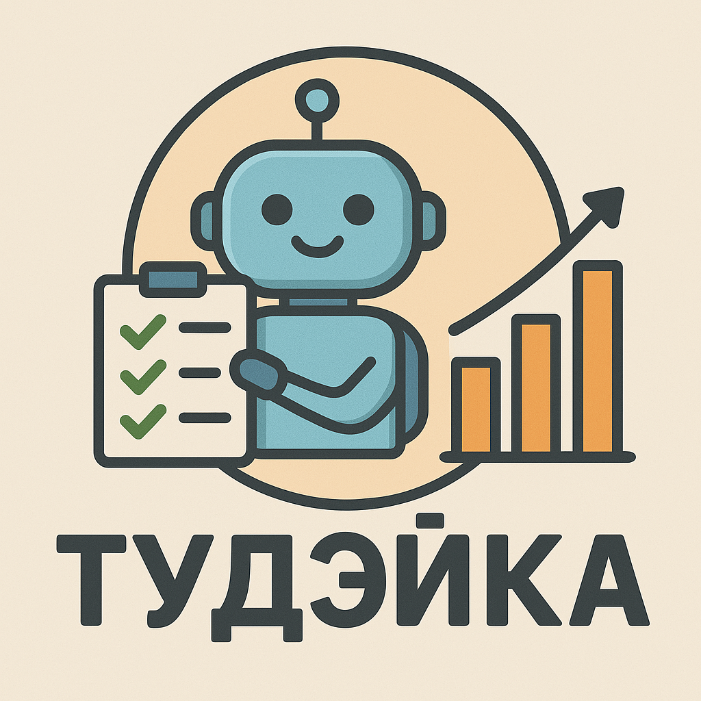

Tudayka Bot

Это простой и полезный бот, с которым ты можешь делиться своими ежедневными делами. В течение дня ты добавляешь события — например, задачи, встречи или маленькие победы. А вечером бот напомнит тебе обо всём, что ты успел, чтобы ты мог порадоваться своим достижениям.